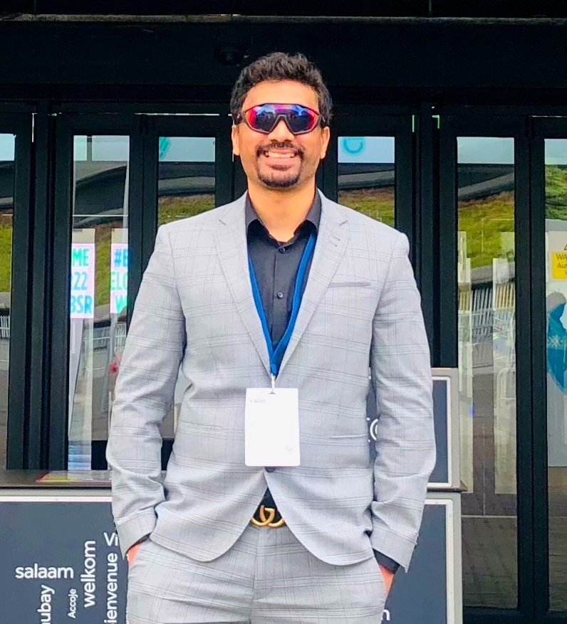

Praveen G.BPostdoctoral Research Associate
G.605 Stopford Building ,
Personal: [Google Scholar] / [GitHub] / [Twitter] |
 |
I am a Postdoctoral Research Associate at the Division of Informatics, Imaging & Data Sciences, The University of Manchester , supervised by Prof. Chris Taylor, Prof. Ariane Herrick and Dr. Michael Berks. I work on developing an inexpensive imaging & automated analysis system to support early diagnosis of systemic sclerosis.
Previously, I completed my Ph.D. at the Department of Electrical and Electronics Engineering, Birla Institue of Technology and Science - Pilani (BITS Pilani), Goa, India, under the supervision of Prof. Anita Agrawal. My thesis was focused on " Development of an Automated Intelligent Decision Support System for Multiple Brain Disorder Diagnosis from MRI Scans". I have worked as a Project Intern with Prof. S. N. Omkar at Indian Institute of Science (IISc)-Bangalore. Before joining BITS Pilani, I obtained my Master's degree from R. V. College of Engineering, Bangalore and Bachelor's degree from Visvesvaraya Technological University, Belgaum, India.